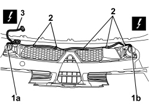

5505C02 WIRING BUILT INTO FRONT BUMPER - R.R.
- Path
- Procedures > 55 ELECTRICAL EQUIPMENT > 5505 INSTRUMENT/GAUGE ELECTRICAL CIRCUITS > 5505C VEHICLE COMPARTMENT WIRING > 5505C02 WIRING BUILT INTO FRONT BUMPER - R.R.
- Kind
- repair procedure (removal / refitting; the operation number is the code)
- Applies to
- all engines; all production periods
- Interactive page
- https://sloeber94.github.io/elrnDB-aBrrSpdr/en/#/946002342
Applies to: all engines; all production periods
 Removing
Removing
 Refitting
RefittingOp. 7055B54 UNDER ENGINE PROTECTION/GUARD - R.R.
1. Disconnect the electrical connections (1a) and (1b).
Description | Component |
|---|---|
LEFT FOG LIGHT | |
RIGHT FOG LIGHT |
2. Disconnect the wiring retainers.
3. Keep the bumper wiring.

Applies to: all engines; all production periods
Refitting
Removing- Check that the wiring is not damaged and that the individual conducts are correctly fastened to the connections.
If necessary, carry out continuity tests.
- Connect the wiring retainers.
- Connect the electrical connections.
Topics linked from this page (4)
- 7055B54 UNDER ENGINE PROTECTION/GUARD - R.R.
- 7210E10 R.R. FRONT BUMPER
- F015 LEFT FOG LAMP
- F016 RIGHT FOG LAMP